介质访问控制（Media Access Control, Mac）需要完成的任务是，为使用传输介质的每一个节点隔离来自同一信道上其他节点所传送的信号，协调活动节点的传输。
Dynamic Channel Allocation
Assumptions
- 节点之间是独立的；
- 只有一条信道；
- 冲突可被观测到；
- Continuous time / Slotted time
- Carrier sense / No carrier sense：载波监听，即发送之前能否知道信道空闲；
Random multiple access 随机介质访问控制
ALOHA
Pure ALOHA
- 任何时刻如果有数据需要发送都能发送；
- 如果没有收到ACK，则重传；
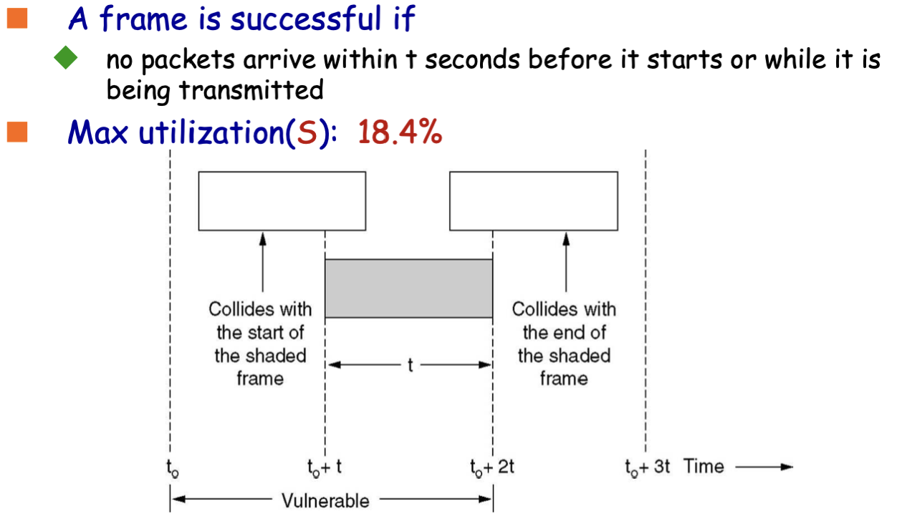
注：Vulnerable Period 脆弱期：\(2t_{trans}\)；
流程
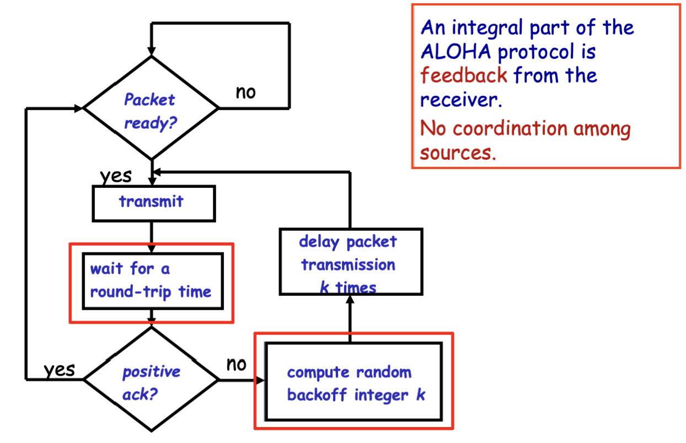
注：如果没有收到正确的ACK，则随机等待一定时间后再重传；
Slotted ALOHA 时隙/分槽
- 只能在每个时隙的开始时刻发送数据
- 需要统一的时钟管理
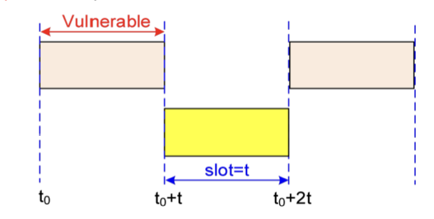
注：Vulnerable Period 脆弱期：\(t_{trans}\)；
Carrier Sense Multiple Access Protocols(CSMA, 载波监听多路访问控制)
- 发前先听：
- If Channel is idle，即监听到信道上没信号，则以一定的概率 \(p\) 发送；（减小有两个节点同时监听到信道上没信号并发送数据导致冲突的可能性）
- If Channel is busy，节点等待直至监听到信道上没信号；
- 如果有两个节点同时发送，则冲突；
- 如果超过一定时间没有收到ACK，则重传；
注：Vulnerable Period 脆弱期：\(t_{prop}\)；
Nonpersistant vs. Persistant CSMA
- Nonpersistant CSMA
如果监听到信道正忙，那它会等待一个随机时间后在进行监听；
- 高负载时，有较高的吞吐量；
- Persistant CSMA
如果监听到信道正忙，会持续监听到信道上没有信号，然后以一定的概率 \(p\) 发送；
- 1 - Persistant CSMA：\(p =
1\)，即监听到信道上没有信号就发送；
- 低负载时，能有较低的时延和较高的吞吐量；
- 高负载时，吞吐量较低；
- p - Persistant CSMA：以一定的概率 \(p\) 发送；
- 1 - Persistant CSMA：\(p =
1\)，即监听到信道上没有信号就发送；
注：\(p\) 越小，则在负载高的情况下，随机化（信号的离散程度）越好，冲突的可能性越小；
比较和总结

注：评价MAC协议的指标：
1. 低负载时的时延；
2. 高负载时的吞吐量（或信道利用率）；
低负载时，适合使用竞争方法；
上述三个协议都有一个共同的问题：只有当 Timer 超时，发送方才知道数据发送过程中可能出现了冲突，没有检测冲突的能力！
CSMA/CD (with Collision Detection, 带冲突检测的载波监听多点介接入技术)
基本思想：
1. 载波监听；
2. 发送方检测冲突；
3. 冲突检测：当发送方检测到冲突时，停止传输，并发送一个 Jam
Signal(强化信号)；
4. backoff 退避：当发送方接收到 Jam
强化信号后，等待一个随机时间在恢复发送；（目的是避免两个发送方同时检测到冲突并进行退避后，监听到信道空闲又发送导致再一次冲突）
特点：
1. 信道是 Half-duplex
半双工，即同一时刻一个节点只能作为发送方或接收方，不能既发又收；
2. 节省了时间和带宽；
3. 是 Ethernet 以太网的基础；
4. 属于 Unacknowledged connectionless service 无确认无连接的服务；
Q：如何检测冲突？
A：通过一条收线，同时从总线上接受信号，与发送的信号进行比较；由于需要较强的信号强度以及较为合适的调制技术，不适用于无线通信；Q：Vulnerable Time 脆弱期 = \(2t_{prop}\)；
Q：等待重传的时间是多长？
A：采用指数退避Binary Exponential Backoff Algorithm；
指数退避
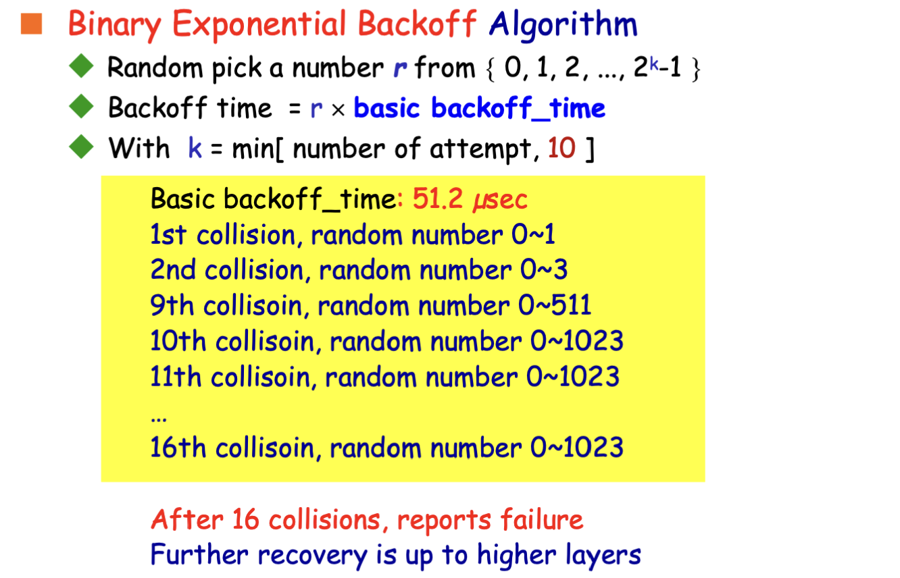
- 最多尝试16次；
- 指数最多为10；
- 基础的退避时间 = 51.2usec；
Wireless LAN Protocols
无线信道无法进行冲突检测（信号强度太小，不满足要求）；CSMA/CD不适用；
隐藏终端 Hidden Terminal
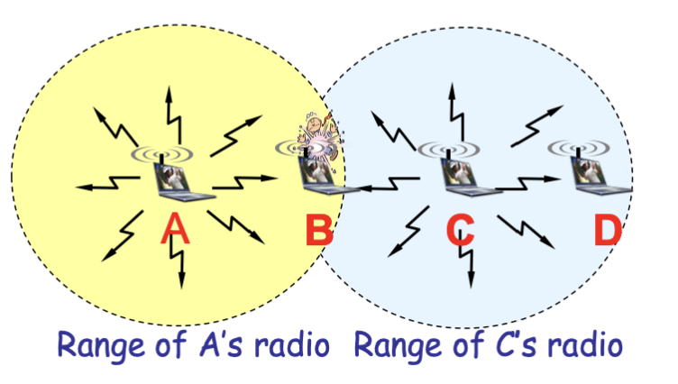
如上图，假如A、C都需要向B发送数据，但是A不在C的范围内，即C监听不到A，所以C会同时向B发送数据，导致接收方B冲突；
Exposed Terminal 暴露终端
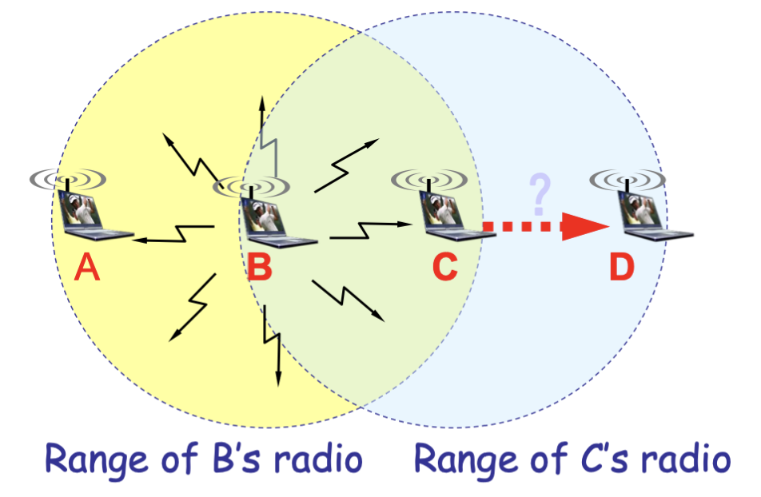
B向A发送数据，但C在B的范围内，C监听到B，错误地认为此时不能向D发送数据；
MACA(Multiple Access Collision Avoidance, 冲突避免多路访问)
MACA的实现步骤如下：
1. 发送方A发送一个 RTS(Request to Send, 请求发送)
帧给接收方B；
* RTS长度为30Bytes，包括数据包的长度信息；
2. 接收方B收到 RTS 后，回复一个 CTS(Clear to Send,
允许发送) 帧给发送方A；
3. 当发送方A收到 CTS 后，开始发送数据；
4. 接收方B收到数据后，回复ACK；
- RTS和CTS用于预约信道，它们均包含待发送数据的长度，这能用于冲突检测，比如：
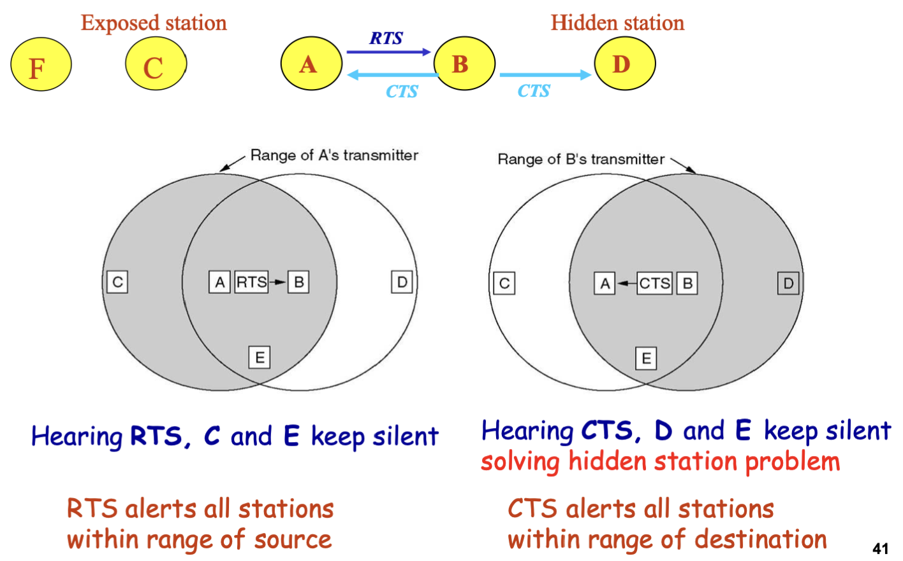
- 对于上图，A需要向B发送数据；
- 其中C和E是暴露终端，D是隐藏终端；
- A向B发送RTS，C和E都会收到；
- B向A发送CTS，D和E都会收到；
- C只收到了RTS，保持沉默；
- D只收到了CTS，也保持沉默；
- E既收到了RTS，又收到了CTS，但是收到RTS后，它认为下一个收到的数据长度应该是RTS中数据的长度，与CTS不符合，故也保持沉默；
如果两个站点A、B同时需要向站点E发送数据：
1. A、B同时发送RTS；
2. 接收方收到RTS后，只会回复先到达的RTS对应的CTS；
3.
假如A站点成功收到CTS，B站点在一定时间范围内没有收到，那么B采用指数退避方式，等待一段时间后再进行尝试；
Controlled multiple access 控制介质访问控制
- Centralized control：Polling 轮询，主站依次向从站发出请求；
- Decentralized control：Token Passing 令牌，节点共同维护一个令牌；
LAN Reference Model: IEEE 802
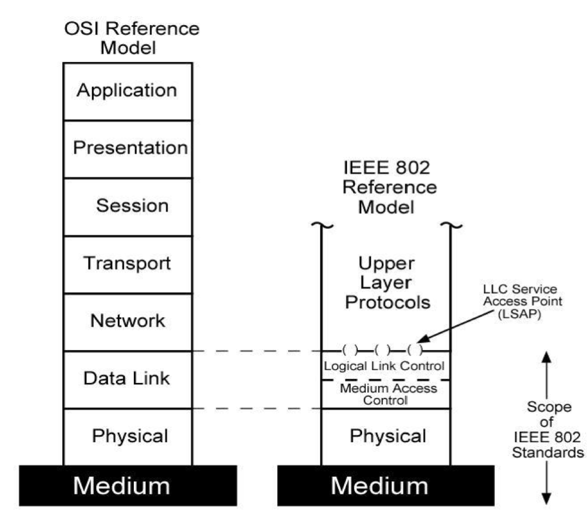
- 只包括物理层和数据链路层，同时将数据链路层 Data Link 进一步划分为 Logical Link Control(LCC, 逻辑链路控制) 和 Medium Access Control(MAC, 介质访问控制) ；
- LCC 逻辑链路控制子层：
- 向网络层提供统一的接口；
- 流量控制；
- 差错控制；
- Inter-connecting LANs with bridge 网桥；
- MAC 介质访问控制子层：
- Framing 成帧；
- 差错检测；
- Physical Address: e.g. MAC address；
- 多路访问控制；
- LAN switching；
- 不同的LAN，MAC子层不同，LCC子层相同；
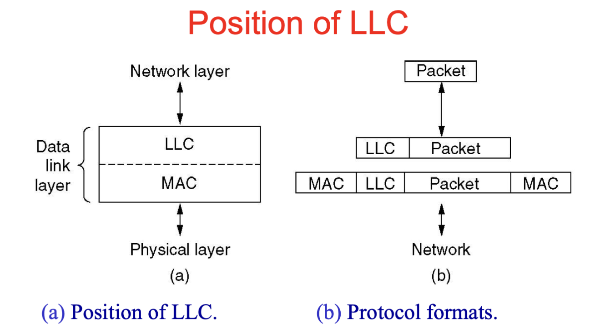
Ethernet 以太网
Classic Ethernet: Physical Layer
Physical Topology 物理拓扑结构
- Bus 总线型；
- Star 星型：通过 Hub 集线器 实现交换；物理上星型，逻辑上总线型；
Network Interface Card（NIC, 网卡）
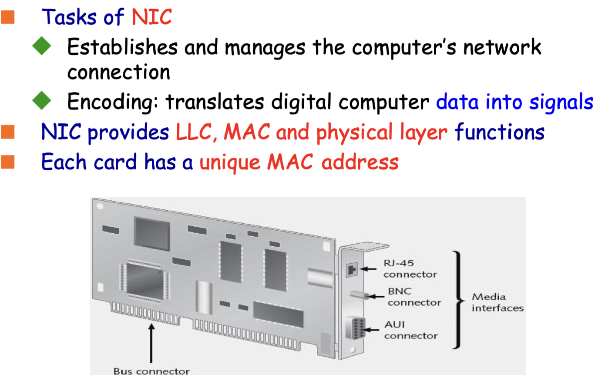
Hub 集线器
100 Base -T X ：
- 100：传输速度，单位Mbps；
- Base：调制技术，即基带传输，不需要进行调制；
- T：传输媒介，T代表双绞线 Twisted Pair，F代表光纤 Fiber Optics；
- X：编码方式，一般采用Manchester编码；
常见的技术如下：
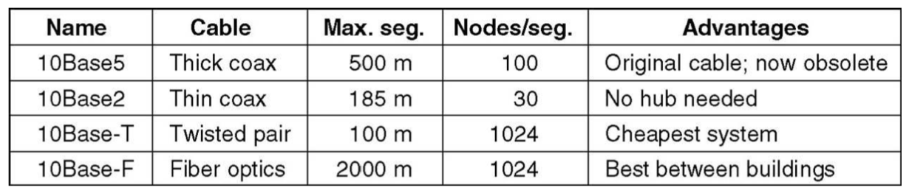
- 距离长用粗缆；
Repeater
- 属于物理层的设备；
- Half Duplex 半双工；
- 将两个总线型的以太网连接；
Classic Ethernet: MAC Sublayer Protocol
帧间隙 Inter Frame Gap：IFP，9.6us(对于10Mbps的以太网)；用于节点转换发送模式/接收模式；
- 广播式信道；
- 以太网采用 1 - persistant CSMA/CD；
Frame Type
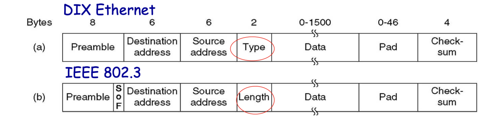
- Data字段最多1500Bytes，最少46Bytes；不满足则用Pad字段填充；
- MAC地址字段：
- 6Bytes；
- 用
FF:FF:FF:FF:FF:FF地址表示广播；
- Frame Length
- 最多1518Bytes，其中1500Bytes为数据长度，18Bytes为控制地址长度；
- 最短64Bytes，其中46Bytes为数据长度；
- 原因是以太网使用了CSMA/CD技术，需要有足够的时间检测冲突，否则会造成数据已经发送完成才检测到冲突；
- \(\frac{M_{min}}{B} = 2\tau = 51.2us\)
Switched Ethernet
Hub vs. Switch
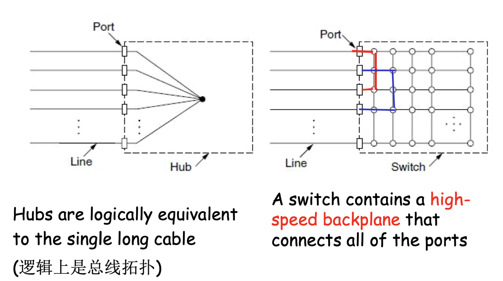
- Hub：一个节点来的信号会向别的所有节点转发；所有节点都在冲突域内，需要CSMA/CD；
- Switch：不需要；
Switch Ways
- Cut-Through 直通
- 边收边转发；
- 无法检查数据帧是否错误；
- 输入/输出需要相同速率；
- Store-Forward 存储转发
- 缓存整个数据帧后，检查没有碰撞/CRC错误帧后，再根据目的MAC地址进行转发；
- 支持差错检测；
- 支持不同输入/输出端口间的交换；
Fast Ethernet
从这里开始，主要介绍不同速率的以太网；经典以太网的速率是10Mbps，即10兆以太网；而快速以太网的速率为100Mbps，即百兆以太网，它的设计原则如下：
- 向后兼容，即保持帧格式、接口等不变；
- 减少 bit time；
- 减少 Max Length of Cable，这个没办法，必要的牺牲；
- Hub或者Switch两种方式都有；
Cabling
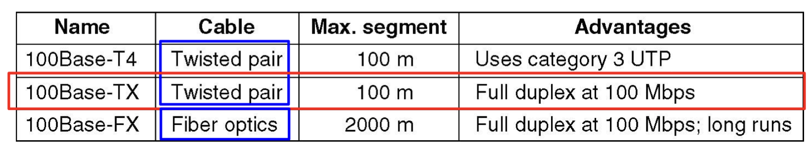
- 不再使用同轴电缆；
- 100Base-T4
- 信号频率为25MHz；
- 4 Twisted Pair（3UTP）
- 不使用Manchester编码，使用三元信号；6B/8T；
- 100Base-TX
- 信号频率为125MHz；
- 2 Twisted Pair（5UTP）；
- 编码4B/5B（125MHz * 4/5 = 100Mbps）；
- 100Base-FX
- 使用光纤；
注：如果用到 Full-Duplex 全双工，即收发是两条线（区分于 Half-Duplex 半双工，收发一条线），不会产生冲突，所以不需要CSMA/CD；
Autonegotiation 自动协商机制
两个不同的以太网之间自动选择相同的参数（即 Speed 和 Duplex Mode）进行配置；
Gigabit Ethernet
Gbit以太网，速度又快了10倍；设计原则如下：
- 无ACK，发了就完了，不需要应答；
- 48-bit的地址格式不变；
- 帧格式不变（但进行了拓展，不然最大电缆长度太短了）；
- 同样分为 Switch(Full-Duplex，最大电缆长度取决于信号衰减程度)和 Hub(Half-Duplex，存在冲突)；
Cabling
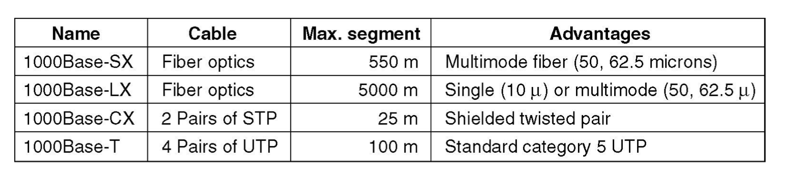
Carrier Extension 载波扩展
我们知道，由于CSMA/CD技术需要满足：
\[ \frac{M_{min}}{B} = 2\tau = 51.2us \]
如果不进行扩展，最大电缆长度仅为约25m；所以需要进行扩展（填充无用的比特），将数据长度扩展为512Bytes；当然，也可以通过 Frame Bursting 帧突发，具体在下一节介绍；
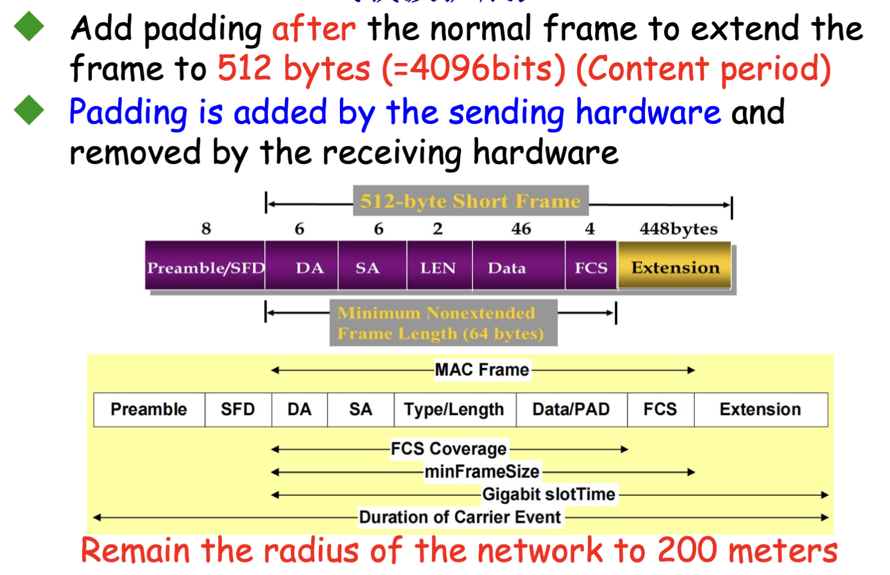
Frame Bursting 帧突发
上述扩展方法，对信道效率存在严重的浪费。如果对于有大量需要连续发送的帧的情况，帧的发送往往用队列存储，发送方可以将需要连续发送的帧拼成一个帧进行发送。
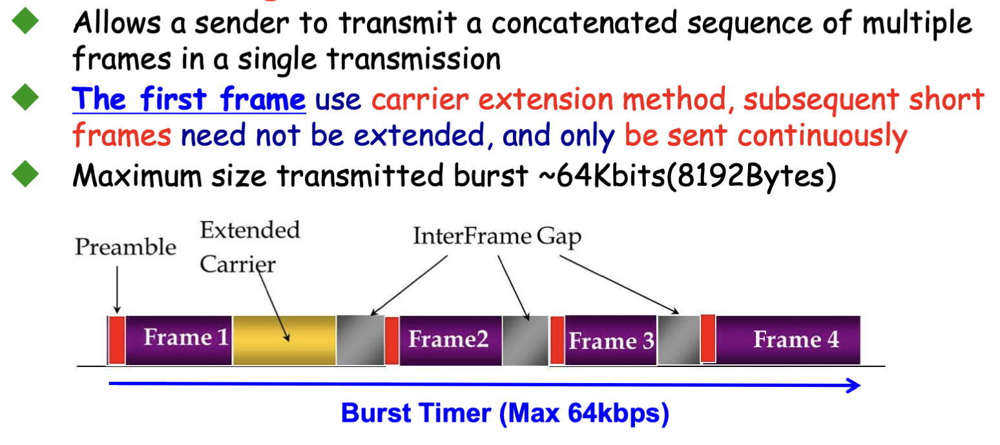
- 第一个帧采用载波扩展；
- 剩余的帧直接连续发送，注意帧之间有帧间隙；
Flow Control
Gigabit Ethernet确实能显著提升传输速度，但是也存在问题，由于发送速度很快，但是接收方突然因为别的任务CPU过忙了1ms，就会导致1953个帧堆积；并且由于它是无连接的，不需要ACK，所以极易造成缓存溢出；
一种方法是，设计一个特殊的控制帧 Pause Frame(0x8808)，如果接收方缓存不足，它会发送该帧给发送方，阻止另一方继续发送数据；
10G Ethernet
- 一般用于 Local Backbone 本地骨干网；
- 只支持 Full-Duplex 全双工；
- 支持 Autonegotiation 自动协商；
Cabling
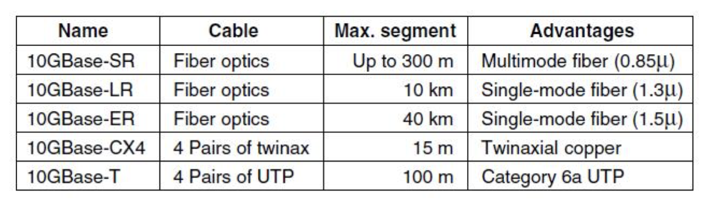
Summary
- 1 - persistent CSMA/CD(如果使用Switch则不需要冲突检测)；
- MAC address = 48bits；
- Frame Size = 64Bytes ～ 1518Bytes；
- Data Size = 46Bytes ～ 1500Bytes；
- Hub and Switch；
- 经典以太网、高速以太网；
- Topology 拓扑结构：总线型(只有经典以太网使用)、星型；
- 物理层编码：Manchester编码(经典以太网使用，百兆以太网之后就不再使用)、8B/6T、4B/5B；
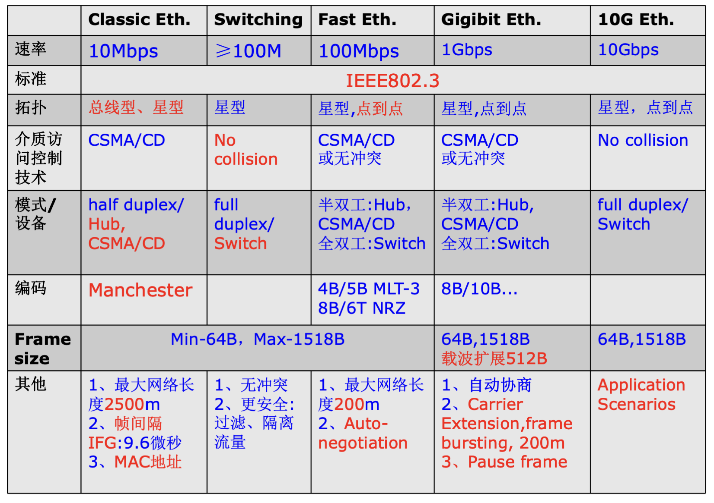
Wireless LANS 无线网络
802.11 LAN architecture
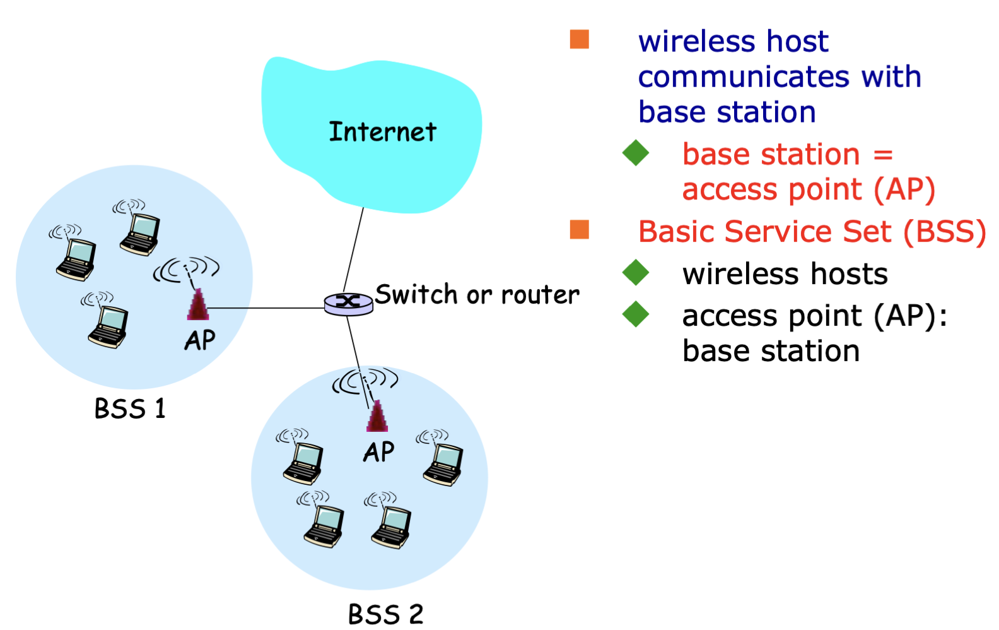
- AP: Access Point；
- AP与外部设备(路由器/交换机)之间采用有线连接；
- BSS: Basic Service Set；
- 内部设备之间采用无线通信；
- 通过AP接入外部网络；
Mac Sublayer
在无线通信中，无法通过 Collision Detection 检测冲突（之前讲过，信号太弱以及调制技术限制）；在802.11无线局域网标准中，MAC子层提供了两种信道接入模式：
- Point coordination function(PCF, 点协调功能,
集中式)
- 由 Base Station 基站(即 AP) 作为点协调控制者；
- 通过 Polling 轮询，为各个站点分配信道访问权，即AP按照预设的顺序依次询问每个站点是否需要发送数据；
- 基站广播一个 beacon frame 信标帧（包括系统参数，是够允许发言等信息）；
- Distributed coordination function(DCF, 分布协调功能,
分布式)
- 没有中央控制者；
- 通过 CSMA/CA(CSMA with Collision Avoidance) 技术避免冲突；
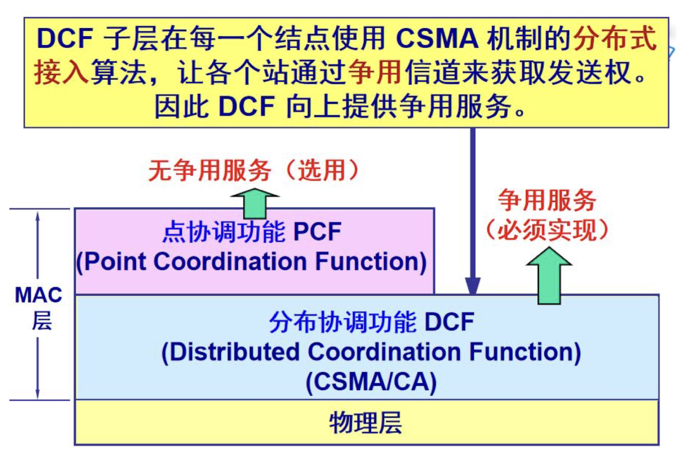
CSMA/CA
for 802.11 Sender, if it needs to send a frame:
1. 通过载波监听等待直到信道空闲，并在等待 DIFS
的时间（即在 DIFS 时间内信道空闲，才认为信道空闲，能发送数据）；
2. 随机退避（0 ～ 15
个时间槽），如果信道上有数据发送则停止计时器；知道计时器为0时发送帧；
3. 如果没有收到ACK，那么采用指数退避，加倍退避时间；
for 802.11 Receiver:
1. 如果正确接收到帧，则等待 SIFS 的时间后回复ACK；
注：\(t_{SIFS} < t_{DIFS}\)，这能保证 ACK 的优先级更高；
事实上，通过为不同类型的帧设置不同长度的 IFS 帧间隔，来实现优先级服务；
CSMA/CA 有以下两种监听模式：
- Physical Sense：物理意义上的监听信道；
- Virtual Sense：虚拟监听；
- 每个站点都记录一个 NAV(Network Allocation Vector, 网络分配向量)；
- 每个帧都携带一个 NAV；
- NAV 表示这个数据帧将预计占用信道多长时间，通过 NAV 来确定退避时间，减少冲突；
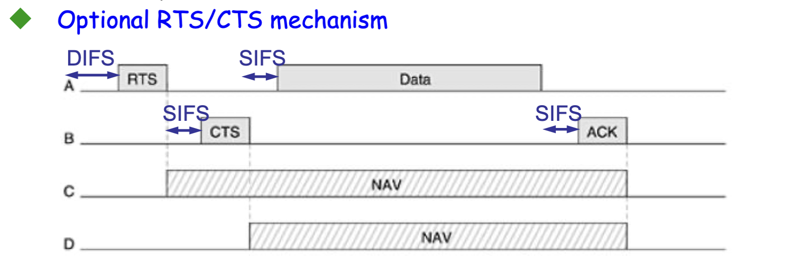
Fragment Burst 段突发
如果信道的误码率较高，那么 ACK
和重传的作用较小；而短帧出错概率小，所以采用 Fragment burst
段突发 的方式，将较长的帧分为小的
Fragment进行发送，来提高可靠性；
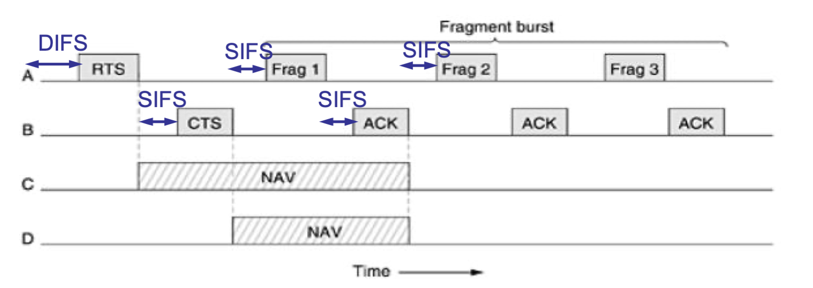
Saving Power 省电模式
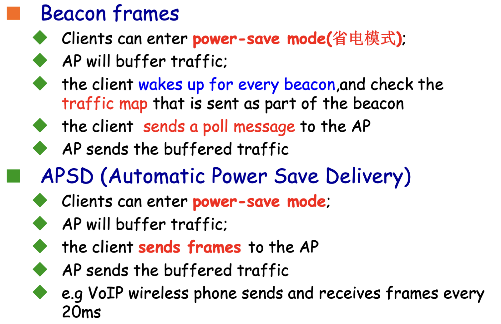
TXOP(Transmission Opportunities)
如果两个站点产生竞争，原始的 CSMA/CA 采用频繁竞争，即每次发送都进行竞争，谁竞争成功了谁发，但这样会导致速率异常，假设站点的带宽分别为 \(c_1,c_2\)，则平均数据率为：
\[ \frac{1}{c_{ave}} = \frac{1}{c_1} + \frac{1}{c_2} \Rightarrow c_{ave} = \frac{1}{\frac{1}{c_1} + \frac{1}{c_2}} \]
即平均数据率小于任何一个站点，造成速率异常。而 TXOP 给予两个站点相同的发送机会，即竞争一次，获得一段传输时间，即
\[
c = c_i / n
\]
比如对于 6Mbps 和 54Mbps 的两个站点，采用TXOP后，按照 3Mbps 和 27Mbps
发送帧；
Frame
- Data Frame
- Control Frame
- RTS
- CTS
- ACK
- Management Frame
- Authentication and De-authentication
- Association
- Beacon and Probe Frame